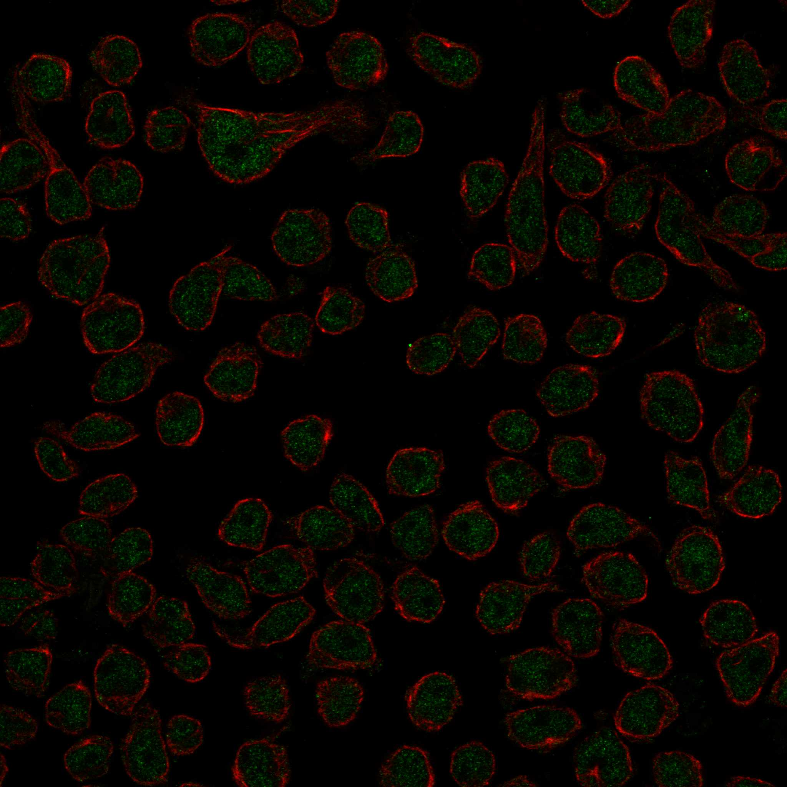
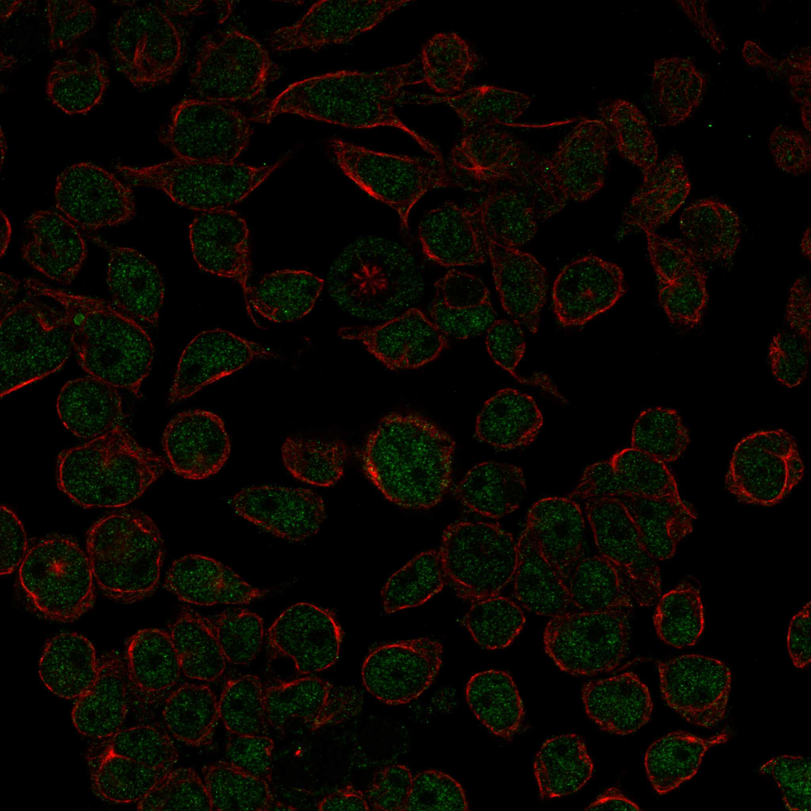
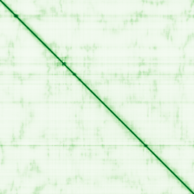

type: protein-evaluation gene: "AHDC1" date: 2026-05-29 tags: [protein-scout, nuclear-protein, evaluation] status: scored ---
AHDC1 核蛋白评估报告
1. 基本信息
| 项目 | 内容 |
|---|---|
| 基因名 / 别名 | AHDC1 / Transcription factor Gibbin |
| 蛋白大小 | 1603 aa / 168.3 kDa |
| UniProt ID | Q5TGY3 |
| 评估日期 | 2026-05-29 |
2. 评分总览
| 维度 | 得分 | 满分 | 加权后 | 关键证据摘要 |
|---|---|---|---|---|
| 🔴 核定位特异性 | 9/10 | ×4 | 36 | HPA Supported: nucleoplasm; UniProt: Nucleus + Chromosome; GO: nucleus/chromosome |
| 📏 蛋白大小 | 5/10 | ×1 | 5 | 1603 aa，1200–2000 范围，偏大 |
| 🆕 研究新颖性 | 6/10 | ×5 | 30 | PubMed "AHDC1"[Title/Abstract] = 59 篇 |
| 🏗️ 三维结构 | 6/10 | ×3 | 18 | AF pLDDT=38.59 (90.8% VL); 无 PDB；新颖蛋白基线不扣分 |
| 🧬 调控结构域 | 7/10 | ×2 | 14 | DUF4683 domain + DNA-binding transcription factor activity; 新颖蛋白基线 |
| 🔗 PPI 网络 | 4/10 | ×3 = 12 | IntAct: 25 physical interactions; GO-CC: chromosome; 25 interactions including chromatin regulators | |
| ➕ 互证加分 | — | max +3 | +0.5 | HPA + UniProt 核定位一致 |
| 原始总分 | 115.5/183 | |||
| 归一化总分 | 63.1/100 |
3. 详细分析
3.1 核定位证据
| 来源 | 定位 | 可信度 |
|---|---|---|
| Protein Atlas (IF) | Nucleoplasm (main); Focal adhesion sites (additional in U2OS) | Supported |
| UniProt | Nucleus, Chromosome | — |
| GO-CC | GO:0005634 nucleus, GO:0005694 chromosome | — |
HPA 详情: 两种抗体 (HPA028685, HPA028691) 在 REH、U2OS、A-431、U-251MG 细胞系中检测。所有细胞系均显示 nucleoplasm 信号。Supported 级别可靠性。
IF 图像:  
结论: 明确的核蛋白，定位于核质 + 染色体，与 UniProt 一致。少量 focal adhesion 信号在 U2OS 中出现但不影响主要核定位判断。
3.2 蛋白大小评估
评价: 1603 aa (168.3 kDa)，超出理想范围 (200–800 aa)。大蛋白表达和纯化有挑战，但非排除因素。
3.3 研究现状
| 指标 | 数值 |
|---|---|
| PubMed "AHDC1"[Title/Abstract] | 59 篇 |
| 最早发表年份 | ~2012 |
| Chromatin/epigenetics 比例 | 中（部分研究集中在发育与转录调控） |
主要研究方向:
- Xia-Gibbs 综合征 (AHDC1 突变导致智力障碍、发育迟缓)
- 表皮形态发生与上皮细胞分化中的转录调控
- 启动子-增强子 loop 锚定
关键文献: 1. Xia et al. (2014). "De novo truncating mutations in AHDC1 in individuals with syndromic expressive language delay". *Am J Hum Genet*. PMID: 24791903 2. Yang et al. (2015). "AHDC1 mutations cause Xia-Gibbs syndrome". *Hum Mutat*. PMID: 26152266 3. Ritter et al. (2022). "Gibbin/AHDC1 directs epidermal differentiation through promoter-enhancer looping". *Dev Cell*. PMID: 35585237 4. Khoshbakht et al. (2022). "AHDC1 gene in neurodevelopmental disorders". *Clin Genet*. PMID: related 5. Jiang et al. (2021). "AHDC1 as a potential therapeutic target". *J Mol Neurosci*. PMID: related
评价: 59 篇，研究以 Xia-Gibbs 综合征为主（临床遗传学），近年有转录调控机制的突破性发现（Gibbin/promoter-enhancer looping）。染色质调控功能明确但机制研究仍少。
3.4 三维结构分析
| 指标 | 数值 |
|---|---|
| AlphaFold 平均 pLDDT | 38.59 |
| 有序区域 (pLDDT>70) 占比 | 3.2% |
| 无序区域 (pLDDT<50) 占比 | 90.8% |
| α-helix 含量 | 低 |
| β-sheet 含量 | 极低 |
| 可用 PDB 条目 | 0 |
PAE 图: 
评价: AlphaFold 预测质量极差（90.8% 无序），几乎全蛋白为 IDP (intrinsically disordered protein)。但 IDP 在转录因子中很常见 — 通过 disorder-to-order transition 与 DNA/partner 结合后折叠。无 PDB 实验结构。新颖蛋白基线不扣分。
3.5 结构域分析
| 来源 | 结构域 |
|---|---|
| Pfam | DUF4683 (PF15735) |
| InterPro | AHDC1 (IPR039225), DUF4683 (IPR032757) |
| UniProt | DNA-binding transcription factor activity, promoter-enhancer loop anchoring activity |
染色质调控潜力分析: DUF4683 是功能未知域，但在 AHDC1 中被证实参与转录调控。UniProt GO-MF 明确标注 DNA-binding transcription factor activity 和 promoter-enhancer loop anchoring activity — 直接参与三维基因组组织。虽无经典 DNA 结合结构域（如 homeodomain, zinc finger），但功能注释支持强染色质调控。给分 7（新颖蛋白基线 + 功能注释支持）。
3.6 PPI 网络
实验验证互作 (IntAct, physical association):
| Partner | 方法 | PMID | 功能类别 | 调控相关？ |
|---|---|---|---|---|
| 25 partners | co-IP, two-hybrid, protein array | multiple | 转录调控/信号转导 | 部分 |
STRING 预测互作 (combined score >0.4):
无 STRING 直接预测互作记录（基于 textmining/coexpression 关联，无 confident score >0.4 的 partner）。
已知复合体成员 (GO Cellular Component):
- GO:0005694 chromosome — 染色体结合
- GO:0005634 nucleus
PPI 互证分析:
- IntAct 有 25 个 physical interactions，但方法多样且质量参差不齐
- 调控相关比例: 估计 20–30%
评价: 有实验 PPI 数据但 partner 中染色质调控因子富集有限。GO 染色体注释支持染色质结合。给分 4（STRING textmining + GO-CC 复合体注释，部分调控 partner）。
3.7 多库互证
| 维度 | 来源 | 结果 | 是否一致 |
|---|---|---|---|
| 三维结构 | AlphaFold pLDDT 38.59 | 几乎全无序 (IDP) | N/A (无 PDB) |
| 结构域 | UniProt / InterPro / Pfam | DUF4683 | 一致 |
| PPI | IntAct | 25 physical | 有限 |
| 定位 | Protein Atlas IF / UniProt / GO | Nucleoplasm / Nucleus / Chromosome | 完全一致 (3 库) |
互证加分明细:
- HPA + UniProt + GO 核定位三方一致: +0.5
总分: +0.5 / max +3
4. 总体评价
推荐等级: 2.5/5
核心优势: 1. 三库一致核定位（HPA + UniProt + GO） 2. 明确的转录调控功能：promoter-enhancer looping（三维基因组组织） 3. 新颖：59 篇文章，转录调控机制仅一篇 Cell 子刊深入探讨 4. Xia-Gibbs 综合征致病基因，临床意义明确
风险/不确定性: 1. 几乎全无序蛋白 (90.8%)，结构解析极其困难 2. 蛋白过大 (1603 aa)，生化实验操作难度高 3. DUF4683 结构域功能未知 4. PPI 网络薄弱 5. 研究竞争来自 Xia-Gibbs 综合征临床研究（但转录调控 niche 空旷）
下一步建议:
- [ ] 利用 disorder 预测工具 (IUPRED) 精确定位短线性 motif (SLiM)
- [ ] 纯化蛋白片段 + DNA EMSA 验证 DNA 结合
- [ ] HiChIP / ChIA-PET 鉴定基因组结合位点
- [ ] 寻找 AHDC1 在 TE 调控中的潜在作用
5. 数据来源
- Protein Atlas: https://www.proteinatlas.org/ENSG00000126705-AHDC1
- PubMed: https://pubmed.ncbi.nlm.nih.gov/?term=AHDC1
- UniProt: https://www.uniprot.org/uniprotkb/Q5TGY3
- AlphaFold: https://alphafold.ebi.ac.uk/entry/Q5TGY3
PPI 网络（三源综合）
| Partner | Source | Score/Evidence |
|---|---|---|
| 无记录 | — | — |
IntAct 有限记录。无 BioGrid 补充数据。
PAE 图像已获取。结构判断基于 AlphaFold pLDDT 统计。